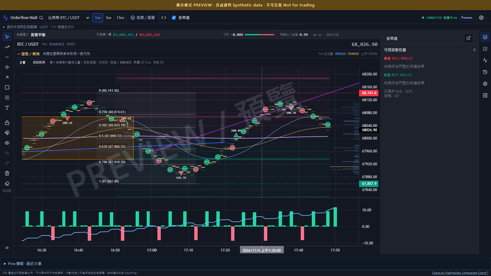

流動性與成交
桌面版整合掛單牆、Footprint、Delta／CVD 與 Volume Profile。來源與資料狀態明確標示。
ORDER FLOW. YOUR WORKSPACE.
把 K 線、掛單牆與訂單流放進同一個工作區。
本機分析與保存，從一條可理解的條件開始研究。

BUILT FOR OBSERVATION
桌面版整合掛單牆、Footprint、Delta／CVD 與 Volume Profile。來源與資料狀態明確標示。
繪圖工具、多面板與可分離視窗。讓你的研究方式決定畫面，而不是被固定版型限制。
新 Studio 支援條件編輯、JSON 匯入／匯出與版本回復。目前在固定合成情境驗證，尚未接真實行情。
LOCAL FIRST
Windows EXE 內含分析引擎與畫面資源，使用內置的本機服務開啟瀏覽器介面。即時市場資料仍需網路。
規則可匯出成 JSON 檔保存或交換。手機版目前為響應式互動預覽，尚未提供獨立 App 或自動跨裝置同步。
開放核心、SDK 與授權範圍仍在規劃，尚未對外釋出；不把「可編輯」等同於「已開源」。
DOWNLOAD / PUBLIC BETA
v2.0.0-beta.2 · ZIP 23.1 MiB
可攜式 EXE，內含 Python 與前端資源，不需另外安裝開發工具。本包為免費測試用 DEV build，非正式付費版。
目前沒有經過 macOS 建置與實機驗證的 .app／.dmg。Windows ZIP 無法直接在 Mac 執行。
手機目前是響應式介面原型，尚無 iOS／Android App。
OrderflowWall.exe 使用桌面工具；保留旁邊的 _internal 目錄。Open-Studio.cmd 試用規則編輯原型。Studio 行情皆為合成資料。介面會在預設瀏覽器開啟本機網址。即時行情需要網路；不需要交易 API Key，不提供下單功能。
此 EXE 尚不支援自動更新。新版發布後，請關閉程式並下載至新的資料夾；保留舊版及使用者資料，再依版本說明遷移。
已通過後端 447＋3 項、前端 95 項測試及本機 EXE 冒煙測試；尚未完成乾淨 Windows 環境、24 小時穩定性與實體手機驗收。此包尚未提供 Windows 發行者程式碼簽章。
Studio 尚未串接真實行情規則；CME 黃金／納指需授權資料源及橋接驗證。付費方案與商用授權設定未完成，請勿將本包當作正式販售版。
SHA256：5D1888DC512057E83914075102BED4CCF81A2F9162673473C2BC6C9B716EED5F
截圖使用合成資料。訂單簿反映可見流動性，不代表未來價格、勝率或投資建議。本網站無收款或註冊流程。回報問題時請勿附上金鑰、授權碼或私人交易資料。